În stînga este slide-ul din curs, în dreapta aceeași figură sau același tabel, calculat în browser din aceleași date. Butonul ▶ modifică parametrul pas cu pas; tabelele și problemele de recapitulare se recalculează odată cu el. Abrevieri: VaR (value at risk), ES (expected shortfall), HS (simulare istorică), EWMA (exponentially weighted moving average, media mobilă ponderată exponențial), GARCH (generalised autoregressive conditional heteroskedasticity), IGARCH (GARCH integrat), ML (verosimilitate maximă), ACF (funcția de autocorelație), VR (raportul varianțelor), JB (Jarque–Bera), R/S (amplitudinea rescalată), MDD (drawdown maxim), CAGR (rata anuală compusă de creștere), SE (eroarea standard), CI (intervalul de încredere), LR (raportul de verosimilitate), GBM (mișcarea browniană geometrică), TPR (rata adevărat pozitivelor), FPR (rata fals pozitivelor), AUC (aria de sub curba ROC), EL (pierderea așteptată), PD (probabilitatea de nerambursare), LGD (pierderea în caz de nerambursare), EAD (expunerea la nerambursare), CoVaR (VaR-ul sistemului condiționat de o instituție), ΔCoVaR (contribuția instituției la CoVaR), BET (indicele Bursei de Valori București), i.i.d. (independente și identic distribuite).
Harta cursului · Capitolele 0–3: date, randamente și distribuții · Capitolele 8–11: volatilitate, risc și memorie · Examenul
Harta cursului
Trei serii, aceeași fereastră: S&P 500, BET, Bitcoin
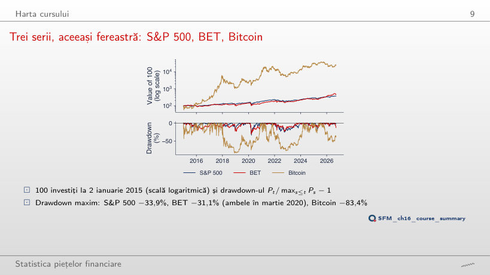
Răspuns
Doar cel al Bitcoin: −76,6% (de la 8 noiembrie 2021 la 21 noiembrie 2022) în loc de −83,4% (decembrie 2017 – decembrie 2018). S&P 500 (−33,9%) și BET (−31,1%) își păstrează minimul din 23 martie 2020, care rămîne în fereastră. Drawdown-ul maxim depinde de eșantion: el măsoară cea mai mare cădere observată, nu o proprietate fixă a activului.
Cursul într-un singur tabel
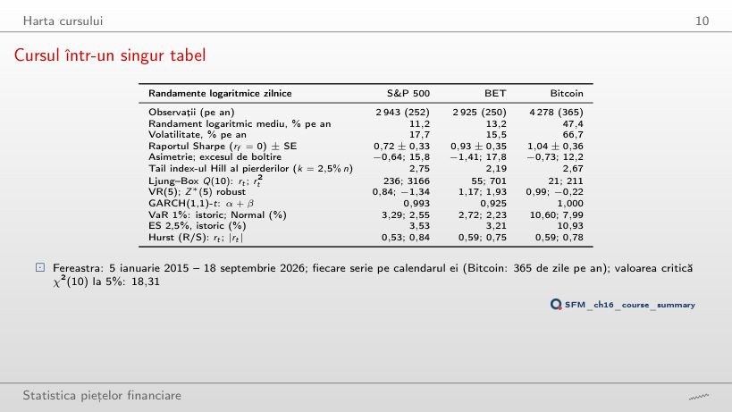
Randamente logaritmice zilnice pe fereastra aleasă (tabelul de pe slide pentru ianuarie 2015)
Răspuns
Nu: Q(10) = 9,1 < 18,31 (p = 0,52), față de 236 pe fereastra din 2015, în timp ce pe rₜ² rămîne 291. Statistica mare din tabel vine în bună parte din zilele din martie 2020, cînd randamente mari de semne opuse au venit una după alta (ρ̂₁ = −0,13); volatility clustering se vede în orice fereastră.
Interpretarea tabelului
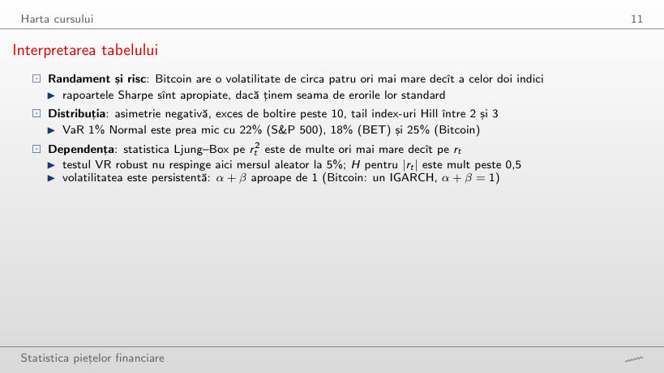
Răspuns
Nu: la 5%, VaR Normal este prea mare, cu 7,8% (S&P 500: 1,79% față de 1,66%), 13,1% (BET) și 6,4% (Bitcoin). Distribuția randamentelor are mai multă masă în centru și în cozile extreme decît distribuția Normală cu aceeași varianță, așa că cele două cuantile se încrucișează între 1% și 5% (la 2,5%, pentru BET, diferența este −0,5%). VaR Normal subestimează riscul tocmai la nivelurile mici, cele folosite în reglementare.
Faptele stilizate într-un singur grafic
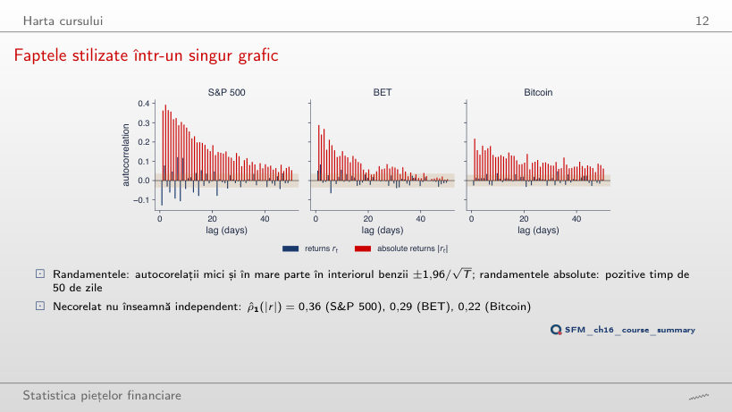
Răspuns
Scade la 0,16, de la 0,36, pentru că zilele din martie 2020 au ieșit din eșantion; toate cele 50 de autocorelații ale lui |r| rămîn totuși pozitive. Mărimea autocorelației depinde de crizele din fereastră, semnul ei pozitiv persistent nu.
Capitolele 0–3: date, randamente și distribuții
Capitolul 1: date, randamente și indicatori (2/2)
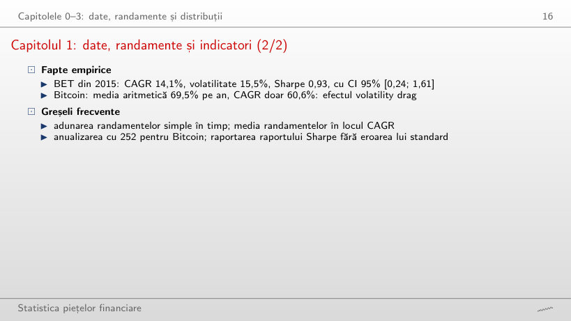
Răspuns
S&P 500 (0,85, CI [−0,10; 1,81]) și Bitcoin (0,60, CI [−0,29; 1,49]); BET (1,53, CI [0,32; 2,74]) nu. Cu circa 5,7 ani de date, eroarea standard √((1 + SR²/2)/Y) este de aproape 0,5: chiar un Sharpe de 0,85 nu se separă de zero.
Capitolul 3: distribuții α-stabile (2/2)
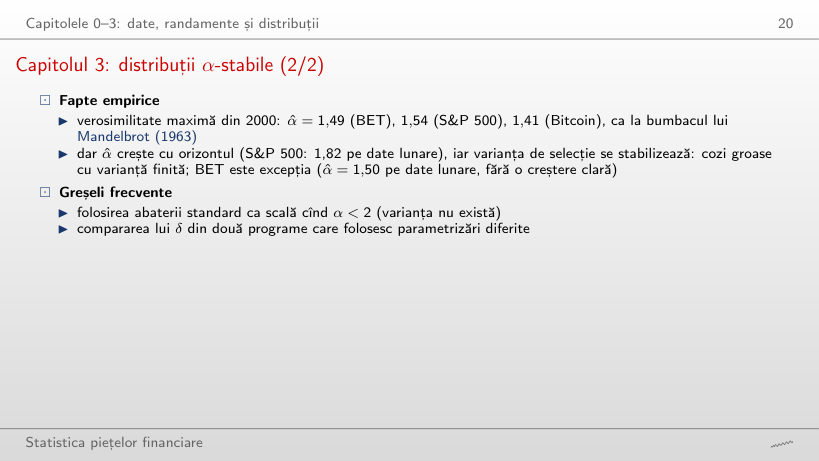
Răspuns
Nu clar: 1,49 zilnic, 1,56 săptămînal, 1,50 lunar, iar intervalul lunar [1,33; 1,67] este larg; BET este excepția de pe slide. Varianța de selecție cumulativă a BET scade totuși de la 3,32 (2010) la 1,96 (2026) și se stabilizează, cum se întîmplă cu o varianță finită. Pentru Bitcoin, α̂ lunar atinge frontiera α = 2.
Capitolele 8–11: volatilitate, risc și memorie
Prognoze VaR 1% pentru BET: simulare istorică și EWMA-Normal
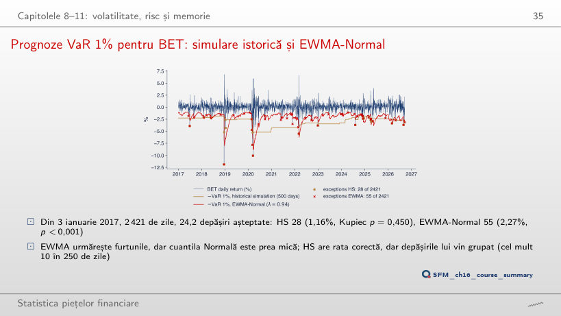
Răspuns
Nu: 38 de depășiri (1,57%, așteptat 24,2), LR = 6,76, p = 0,009. Cu 250 de zile, VaR 1% este a treia cea mai mică valoare din fereastră și coada este estimată din foarte puține observații; cu 500 de zile sînt 28 de depășiri (p = 0,450), cu 750 de zile 26.
Examenul
Problema 1: rezolvare
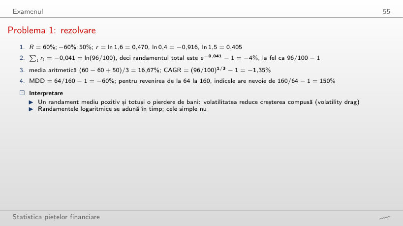
Problemă de recapitulare: randamente și drawdown
Răspuns
Rămîne −1,35%: CAGR depinde doar de prima și de ultima valoare, (96/100)^(1/3) − 1. Se schimbă media aritmetică, (60 − 25 − 20)/3 = 5,00%, și drawdown-ul maxim, 96/160 − 1 = −40%.
Problema 2: rezolvare
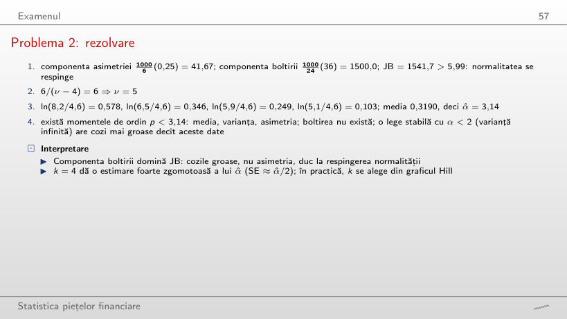
Problemă de recapitulare: distribuție și cozi
Răspuns
Scade la un sfert: 1000/24 × 9 = 375, față de 1500, pentru că K intră la pătrat; JB = 41,67 + 375 = 416,7, tot mult peste 5,99. Gradele de libertate ale distribuției Student-t cu același K cresc la ν = 4 + 6/3 = 6.
Problema 3: rezolvare
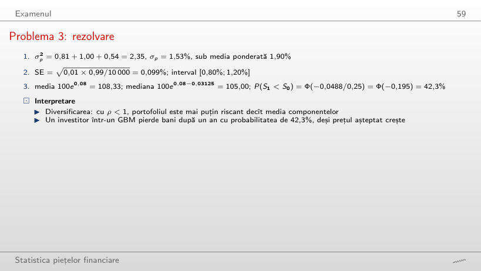
Problemă de recapitulare: portofoliu, Monte Carlo și GBM
Răspuns
0,10%: σp² = 0,81 + 1,00 − 1,80 = 0,01. Cu ρ = −1 riscul nu dispare complet, pentru că cele două poziții nu se compensează exact: 0,6 × 1,5 = 0,9 față de 0,4 × 2,5 = 1,0. La ρ = 1, σp = 1,90%, egală cu media ponderată.
Problema 4: rezolvare
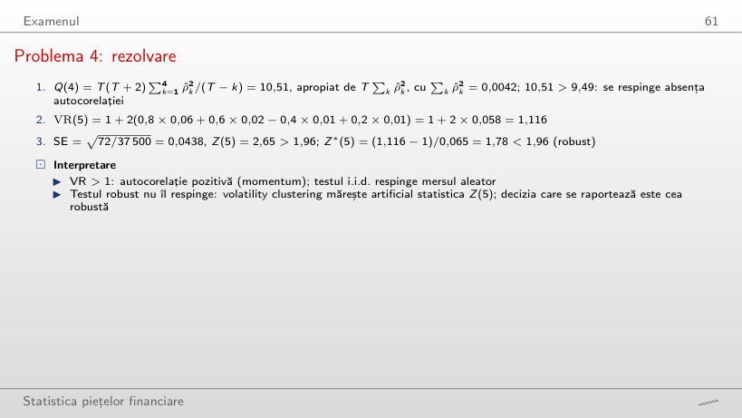
Problemă de recapitulare: autocorelație și raportul varianțelor
Răspuns
Da: VR(5) = 1 + 2 × 0,082 = 1,164 și Z*(5) = 0,164/0,065 = 2,52 > 1,96 (Z(5) = 3,74, Q(4) = 21,78). Cu ρ̂(1) = 0,06 diferența dintre cele două teste decidea rezultatul; aici autocorelația este destul de mare ca să fie respinsă și cu eroarea standard robustă.
Problema 5: rezolvare
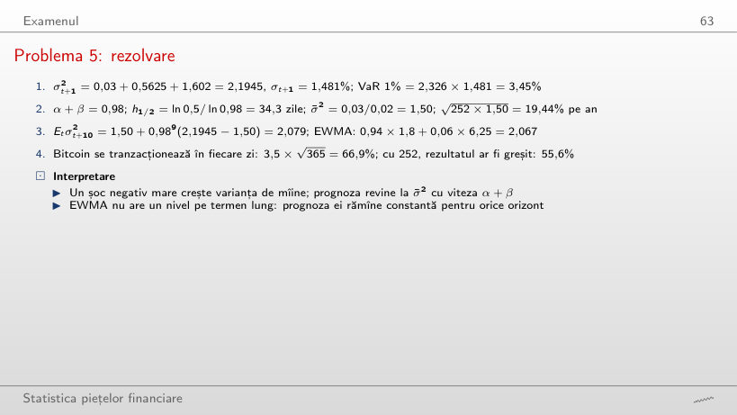
Problemă de recapitulare: prognoze de volatilitate
Răspuns
Tot 2,1945: GARCH(1,1) folosește ε², deci un cîștig și o pierdere de aceeași mărime cresc varianța la fel. Asimetria (leverage effect) cere modele ca GJR sau EGARCH.
Problema 6: rezolvare
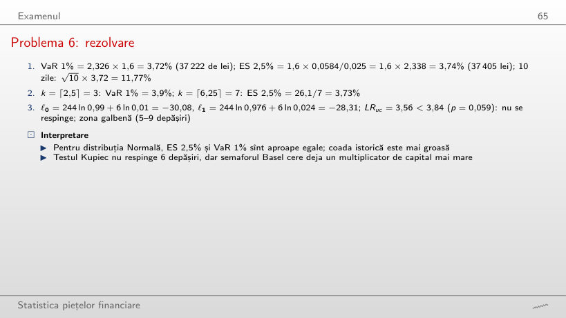
Problemă de recapitulare: VaR, ES și backtesting
Răspuns
Zona galbenă, de la 5 depășiri; pe măsură ce depășirile cresc, testul Kupiec respinge abia de la 7 (LR = 5,50, p = 0,019; cu 6, LR = 3,56 și p = 0,059). În 250 de zile testul are putere mică, de aceea semaforul Basel penalizează mai devreme. Testul respinge și la 0 depășiri (LR = 5,03): prea puține depășiri arată un VaR prea prudent.
Problema 7: rezolvare
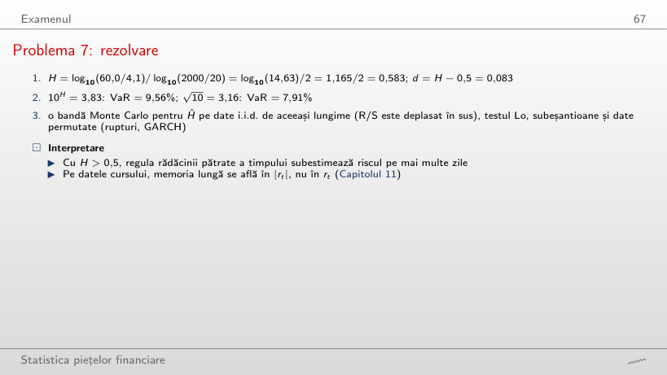
Problemă de recapitulare: memorie lungă și scalarea riscului
Răspuns
Nu: H = log₁₀(40/4,1)/2 = 0,495 < 0,5, deci 10^H = 3,12 și VaR = 7,81%, puțin sub 7,91% cu √10. Panta, nu creșterea lui R/S cu n, decide: R/S crește și pentru date fără memorie, cu exponentul 0,5.
Problema 8: rezolvare
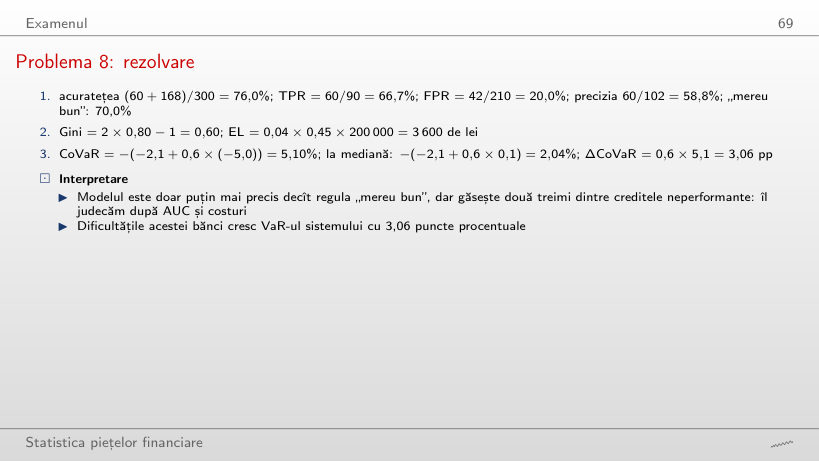
Problemă de recapitulare: scoring de credit și risc sistemic
Răspuns
TPR, 60/90 = 66,7%: ea privește doar creditele neperformante. Acuratețea scade la (60 + 90)/300 = 50%, sub regula „mereu bun” (70%), FPR crește la 57,1%, iar precizia scade la 60/180 = 33,3%.
Datele cursului din data/market (pînă la 18 septembrie 2026): închiderile zilnice ale S&P 500 și BET din ianuarie 2000 și ale Bitcoin din septembrie 2014. Browserul taie fereastra și recalculează randamentele, indicatorii de performanță, momentele, indicele Hill, ACF, testele Ljung–Box și VR, VaR și ES, exponentul Hurst, varianța de selecție cumulativă, prognozele VaR 1% și testul Kupiec. Estimațiile GARCH(1,1)-t vin din codul capitolului (Quantlets/Ch_16), estimările α ale legii stabile pe trei orizonturi din Capitolul 3 (Quantlets/Ch_03). Alte ferestre, niveluri α, ferestre ale simulării istorice și valori λ sînt rulări suplimentare ale aceluiași cod. Problemele de recapitulare pornesc de la cifrele de pe slide-uri.